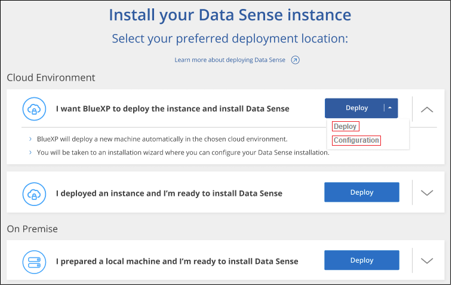
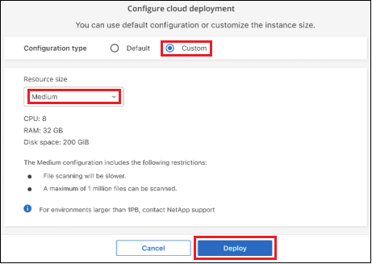
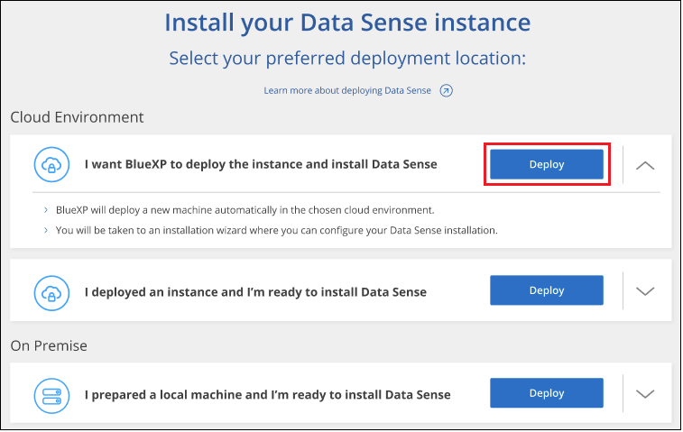

Richiedi modifiche alla documentazione
Richiedi modifiche alla documentazione Modifica questa pagina
Modifica questa pagina Scopri come collaborare
Scopri come collaborareImplementare la classificazione BlueXP nel cloud utilizzando BlueXP
Collaboratori
Completare alcuni passaggi per implementare la classificazione BlueXP nel cloud. BlueXP implementerà l’istanza di classificazione BlueXP nella stessa rete di provider cloud del connettore BlueXP.
Nota: È anche possibile "Installare la classificazione BlueXP su un host Linux con accesso a Internet". Questo tipo di installazione può essere una buona opzione se si preferisce eseguire la scansione dei sistemi ONTAP on-premise utilizzando un’istanza di classificazione BlueXP che si trova anche on-premise, ma non è un requisito. Il software funziona esattamente allo stesso modo, indipendentemente dal metodo di installazione scelto.
Avvio rapido
Inizia subito seguendo questi passaggi o scorri verso il basso fino alle sezioni rimanenti per ottenere dettagli completi.
 Creare un connettore
Creare un connettoreSe non si dispone già di un connettore, crearne uno. Vedere "Creazione di un connettore in AWS", "Creazione di un connettore in Azure", o. "Creazione di un connettore in GCP".
Puoi anche farlo "Installare il connettore on-premise" Su un host Linux nella rete o su un host Linux nel cloud.
 Esaminare i prerequisiti
Esaminare i prerequisitiAssicurarsi che l’ambiente soddisfi i prerequisiti. Ciò include l’accesso a Internet in uscita per l’istanza, la connettività tra il connettore e la classificazione BlueXP sulla porta 443 e altro ancora. Consulta l’elenco completo.
 Implementare la classificazione BlueXP
Implementare la classificazione BlueXPAvviare l’installazione guidata per implementare l’istanza di classificazione BlueXP nel cloud.
 Iscriviti al servizio di classificazione BlueXP
Iscriviti al servizio di classificazione BlueXPI primi 1 TB di dati che la classificazione BlueXP scansiona in BlueXP sono gratuiti per 30 giorni. Per continuare a eseguire la scansione dei dati dopo tale data, è necessario un abbonamento BlueXP tramite il proprio provider cloud Marketplace o una licenza BYOL di NetApp.
Creare un connettore
Se non disponi già di un connettore, crea un connettore nel tuo cloud provider. Vedere "Creazione di un connettore in AWS" oppure "Creazione di un connettore in Azure", o. "Creazione di un connettore in GCP". Nella maggior parte dei casi, probabilmente si dispone di un connettore configurato prima di tentare di attivare la classificazione BlueXP, perché la maggior parte "Le funzionalità di BlueXP richiedono un connettore", ma in alcuni casi è necessario impostarne uno ora.
Esistono alcuni scenari in cui è necessario utilizzare un connettore implementato in uno specifico cloud provider:
-
Quando si esegue la scansione dei dati in Cloud Volumes ONTAP in AWS, Amazon FSX per ONTAP o nei bucket AWS S3, si utilizza un connettore in AWS.
-
Quando si esegue la scansione dei dati in Cloud Volumes ONTAP in Azure o in Azure NetApp Files, si utilizza un connettore in Azure.
-
Per Azure NetApp Files, deve essere implementato nella stessa regione dei volumi che si desidera sottoporre a scansione.
-
-
Quando si esegue la scansione dei dati in Cloud Volumes ONTAP in GCP, si utilizza un connettore in GCP.
I sistemi ONTAP on-premise, le condivisioni di file non NetApp, lo storage a oggetti S3 generico, i database, le cartelle OneDrive, gli account SharePoint e gli account Google Drive possono essere sottoposti a scansione quando si utilizza uno di questi connettori cloud.
Nota: È anche possibile "Installare il connettore on-premise" Su un host Linux nella rete o nel cloud. Alcuni utenti che intendono installare BlueXP classification on-premise possono anche scegliere di installare il connettore on-premise.
Come puoi vedere, potrebbero esserci alcune situazioni in cui devi utilizzare "Connettori multipli".
Supporto per le regioni governative
La classificazione BlueXP è supportata quando il connettore viene implementato in un’area governativa (AWS GovCloud, Azure Gov o Azure DoD). Se implementato in questo modo, la classificazione BlueXP presenta le seguenti restrizioni:
-
Impossibile eseguire la scansione di account OneDrive, SharePoint e Google Drive.
-
La funzionalità dell’etichetta AIP (Microsoft Azure Information Protection) non può essere integrata.
Esaminare i prerequisiti
Esaminare i seguenti prerequisiti per assicurarsi di disporre di una configurazione supportata prima di implementare la classificazione BlueXP nel cloud.
- Abilitare l’accesso a Internet in uscita dalla classificazione BlueXP
-
La classificazione BlueXP richiede l’accesso a Internet in uscita. Se la rete fisica o virtuale utilizza un server proxy per l’accesso a Internet, assicurarsi che l’istanza di classificazione BlueXP disponga dell’accesso a Internet in uscita per contattare i seguenti endpoint. Quando si implementa la classificazione BlueXP nel cloud, si trova nella stessa subnet del connettore.
Esaminare la tabella appropriata riportata di seguito a seconda che si stia implementando la classificazione BlueXP in AWS, Azure o GCP.
| Endpoint | Scopo |
|---|---|
Comunicazione con il servizio BlueXP, che include gli account NetApp. |
|
Comunicazione con il sito Web BlueXP per l’autenticazione utente centralizzata. |
|
https://cloud-compliance-support-netapp.s3.us-west-2.amazonaws.com https://hub.docker.com https://auth.docker.io https://registry-1.docker.io https://index.docker.io/ https://dseasb33srnrn.cloudfront.net/ https://production.cloudflare.docker.com/ |
Fornisce l’accesso a immagini, manifesti e modelli software. |
Consente a NetApp di eseguire lo streaming dei dati dai record di audit. |
|
https://cognito-idp.us-east-1.amazonaws.com https://cognito-identity.us-east-1.amazonaws.com https://user-feedback-store-prod.s3.us-west-2.amazonaws.com https://customer-data-production.s3.us-west-2.amazonaws.com |
Abilita la classificazione BlueXP per accedere e scaricare manifesti e modelli e per inviare registri e metriche. |
| Endpoint | Scopo |
|---|---|
Comunicazione con il servizio BlueXP, che include gli account NetApp. |
|
Comunicazione con il sito Web BlueXP per l’autenticazione utente centralizzata. |
|
https://support.compliance.api.bluexp.netapp.com/ https://hub.docker.com https://auth.docker.io https://registry-1.docker.io https://index.docker.io/ https://dseasb33srnrn.cloudfront.net/ https://production.cloudflare.docker.com/ |
Fornisce accesso a immagini software, manifesti, modelli e per inviare registri e metriche. |
Consente a NetApp di eseguire lo streaming dei dati dai record di audit. |
| Endpoint | Scopo |
|---|---|
Comunicazione con il servizio BlueXP, che include gli account NetApp. |
|
Comunicazione con il sito Web BlueXP per l’autenticazione utente centralizzata. |
|
https://support.compliance.api.bluexp.netapp.com/ https://hub.docker.com https://auth.docker.io https://registry-1.docker.io https://index.docker.io/ https://dseasb33srnrn.cloudfront.net/ https://production.cloudflare.docker.com/ |
Fornisce accesso a immagini software, manifesti, modelli e per inviare registri e metriche. |
Consente a NetApp di eseguire lo streaming dei dati dai record di audit. |
- Assicurarsi che BlueXP disponga delle autorizzazioni necessarie
-
Assicurarsi che BlueXP disponga delle autorizzazioni per distribuire le risorse e creare gruppi di protezione per l’istanza di classificazione BlueXP. Le autorizzazioni BlueXP più recenti sono disponibili in "Le policy fornite da NetApp".
- Assicurarsi che BlueXP Connector possa accedere alla classificazione BlueXP
-
Garantire la connettività tra il connettore e l’istanza di classificazione BlueXP. Il gruppo di protezione per il connettore deve consentire il traffico in entrata e in uscita sulla porta 443 da e verso l’istanza di classificazione BlueXP. Questa connessione consente l’implementazione dell’istanza di classificazione BlueXP e consente di visualizzare le informazioni nelle schede Compliance e Governance. La classificazione BlueXP è supportata nelle regioni governative di AWS e Azure.
Per le implementazioni di AWS e AWS GovCloud sono richieste regole aggiuntive per i gruppi di sicurezza in entrata e in uscita. Vedere "Regole per il connettore in AWS" per ulteriori informazioni.
Per le implementazioni di Azure e Azure Government sono richieste regole aggiuntive per i gruppi di sicurezza in entrata e in uscita. Vedere "Regole per il connettore in Azure" per ulteriori informazioni.
- Assicurarsi che sia possibile mantenere in esecuzione la classificazione BlueXP
-
L’istanza di classificazione BlueXP deve rimanere attiva per eseguire una scansione continua dei dati.
- Garantire la connettività del browser Web alla classificazione BlueXP
-
Una volta attivata la classificazione BlueXP, assicurarsi che gli utenti accedano all’interfaccia BlueXP da un host che dispone di una connessione all’istanza di classificazione BlueXP.
L’istanza di classificazione BlueXP utilizza un indirizzo IP privato per garantire che i dati indicizzati non siano accessibili a Internet. Di conseguenza, il browser Web utilizzato per accedere a BlueXP deve disporre di una connessione a tale indirizzo IP privato. Tale connessione può provenire da una connessione diretta al provider cloud (ad esempio, una VPN) o da un host all’interno della stessa rete dell’istanza di classificazione BlueXP.
- Controllare i limiti della vCPU
-
Assicurati che il limite vCPU del tuo cloud provider consenta l’implementazione di un’istanza con il numero necessario di core. È necessario verificare il limite vCPU per la famiglia di istanze pertinente nella regione in cui è in esecuzione BlueXP. "Vedere i tipi di istanza richiesti".
Per ulteriori informazioni sui limiti delle vCPU, consultare i seguenti collegamenti:
Si noti che è possibile implementare la classificazione BlueXP su un’istanza in ambienti cloud AWS con meno CPU e meno RAM, ma l’utilizzo di questi sistemi presenta delle limitazioni. Vedere "Utilizzando un tipo di istanza più piccolo" per ulteriori informazioni.
Implementare la classificazione BlueXP nel cloud
Seguire questi passaggi per implementare un’istanza della classificazione BlueXP nel cloud. Il connettore implementerà l’istanza nel cloud, quindi installerà il software di classificazione BlueXP su tale istanza.
Quando si implementa la classificazione BlueXP da un connettore BlueXP in un ambiente AWS, è possibile selezionare la dimensione predefinita dell’istanza oppure scegliere tra due tipi di istanze più piccoli. "Vedere i tipi di istanze e le limitazioni disponibili". Nelle regioni in cui il tipo di istanza predefinito non è disponibile, la classificazione BlueXP viene eseguita su un "tipo di istanza alternativo".
-
Dal menu di navigazione a sinistra di BlueXP, fare clic su Governance > Classification.

-
Fare clic su Activate Data Sense (attiva rilevamento dati).

-
Dalla pagina Installation, fare clic su Deploy > Deploy per utilizzare le dimensioni dell’istanza "Large" e avviare la procedura guidata di implementazione del cloud.
È inoltre possibile fare clic su Deploy > Configuration per scegliere tra due tipi di istanze più piccoli se non si dispone di molti dati da sottoporre a scansione. Ciò consente di risparmiare sui costi del cloud quando si utilizza un’istanza più piccola. Di seguito viene mostrata una dimensione della risorsa "media".
Quindi fare clic su Deploy per avviare la procedura guidata di implementazione del cloud.

-
La procedura guidata visualizza lo stato di avanzamento durante le fasi di implementazione. In caso di problemi, il sistema si arresta e richiede l’immissione.

-
Una volta implementata l’istanza e installata la classificazione BlueXP, fare clic su Continue to Configuration (continua alla configurazione) per accedere alla pagina Configuration (Configurazione).
-
Dal menu di navigazione a sinistra di BlueXP, fare clic su Governance > Classification.
-
Fare clic su Activate Data Sense (attiva rilevamento dati).
-
Fare clic su Deploy per avviare la procedura guidata di implementazione del cloud.

-
La procedura guidata visualizza lo stato di avanzamento durante le fasi di implementazione. In caso di problemi, il sistema si arresta e richiede l’immissione.
-
Una volta implementata l’istanza e installata la classificazione BlueXP, fare clic su Continue to Configuration (continua alla configurazione) per accedere alla pagina Configuration (Configurazione).
-
Dal menu di navigazione a sinistra di BlueXP, fare clic su Governance > Classification.
-
Fare clic su Activate Data Sense (attiva rilevamento dati).
-
Fare clic su Deploy per avviare la procedura guidata di implementazione del cloud.
-
La procedura guidata visualizza lo stato di avanzamento durante le fasi di implementazione. In caso di problemi, il sistema si arresta e richiede l’immissione.
-
Una volta implementata l’istanza e installata la classificazione BlueXP, fare clic su Continue to Configuration (continua alla configurazione) per accedere alla pagina Configuration (Configurazione).
BlueXP implementa l’istanza di classificazione BlueXP nel tuo cloud provider.
Gli aggiornamenti al software di classificazione BlueXP Connector e BlueXP sono automatizzati purché le istanze dispongano di connettività Internet.
Dalla pagina di configurazione è possibile selezionare le origini dati da sottoporre a scansione.
Puoi anche farlo "Impostare la licenza per la classificazione BlueXP" a questo punto. Non ti verrà addebitato alcun costo fino al termine della prova gratuita di 30 giorni.